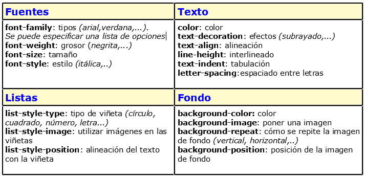
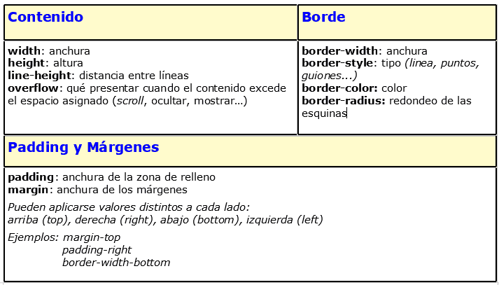
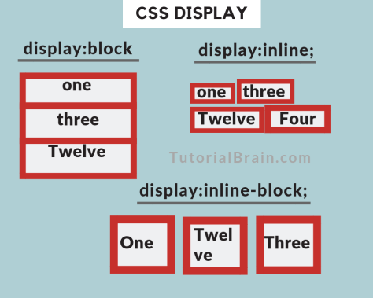
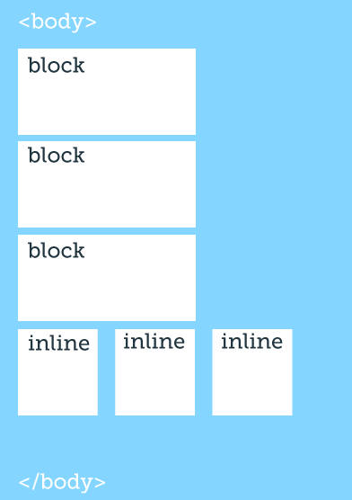
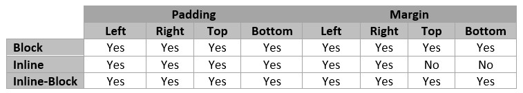

Propiedades Basicas CSS:
Existen muchas propiedades que pueden controlarse con CSS. No vamos a listarlas todas , pero sí vamos a presentar algunas destacados de uso habitual..
Ahora reviseramos las mas comunes para manejo de cajas o contenedores..

Display: inline - Display: Block- Display: inline-block
Aca tenemos otro ejemplo
Aca revisamos como trabaja el margin y el padding segun se halla seleccionado
Display Inline : es mas usado para realizar por ejemplo varios temas, o imagenes, etc contenidos. que se distribuya todo sobre una linea ejemplo tres temas en una fila.
Display Block : Es mas usado para realizar contenido en un bloque, por que a su vez abarca toda la fila.
Display-Inline-Block: Es una mescla de ambos, se comporta como bloque, pero con respecto a los elemntos que lo rodean se comporta como una caja de linea.